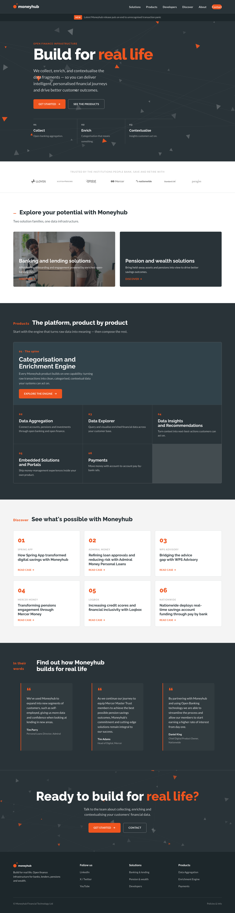

AEM · Presales redesigns
Brand-faithful redesign explorations
One-shot uplift reports for three sites. Each report reads the current design, names the tensions worth resolving, and presents three differentiated redesign variants — every one openable as a full-page prototype.

No-code app & database builder
Magenta/coral fintech-adjacent SaaS. The variants bet on fixes, colour, and a self-building live-app hero.

Open-banking data platform
Restrained B2B fintech, white/slate/orange with a data-fragments motif. Variants bet on fixes, colour, and a living data pipeline.

PD credits for K-12 teachers
Warm, institutional, cream/forest-green. Variants bet on fixes, a credit-path configurator, and editorial photography with arrival motion.

Redesign + EDS replatform
Whitepaper on the wheelercat.com redesign, replatform to Edge Delivery Services, and uplift — before/after, templates, and a 99 PageSpeed result.